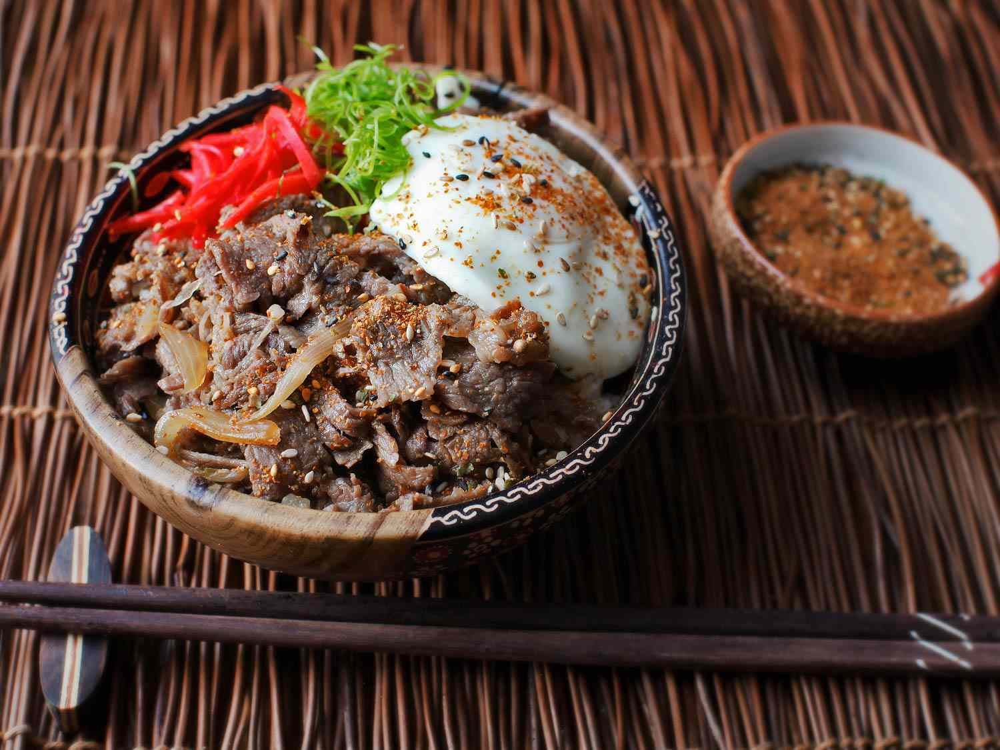
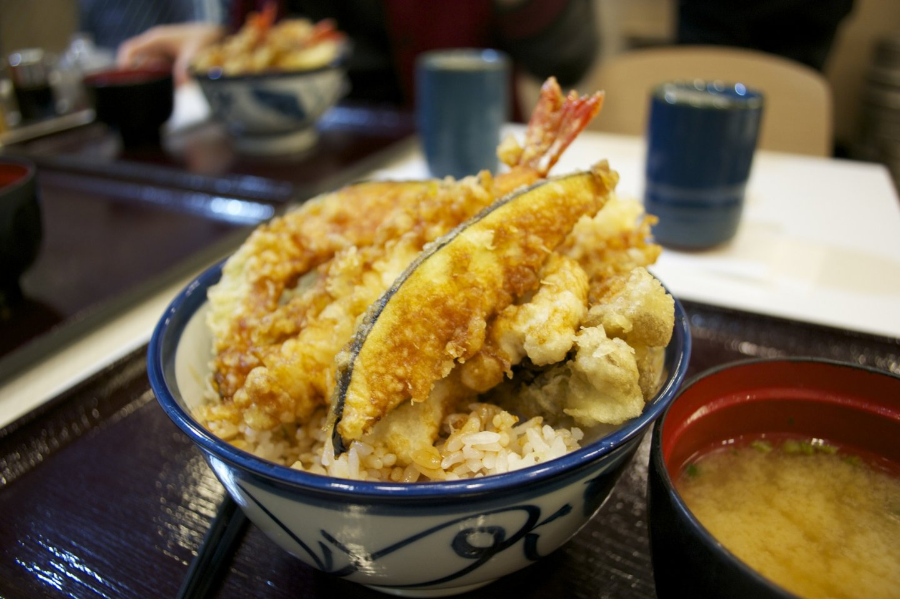
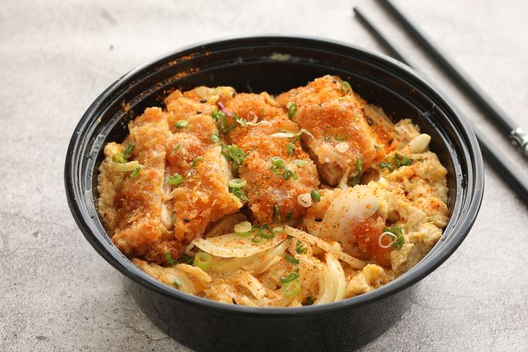

Main Menu
Gyudon - Rp.50.000 (hover to see description and image)

Description
Japanese dish consisting of simmered beef and onion served over a bowl of rice.
Tendon - Rp.40.000 (hover to see description and image)

Description
Japanese dish consisting of various fried tempura served over a bowl of rice.
Katsudon - Rp.43.000 (hover to see description and image)

Description
Japanese dish consisting of breaded deep-fried chicken cutlet served over a bowl of rice.